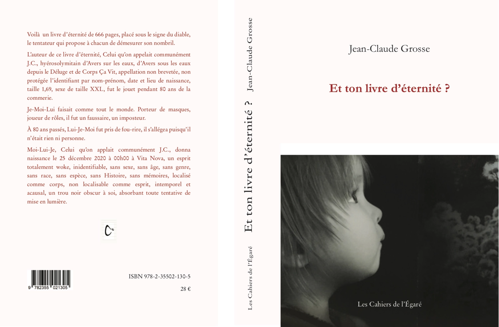
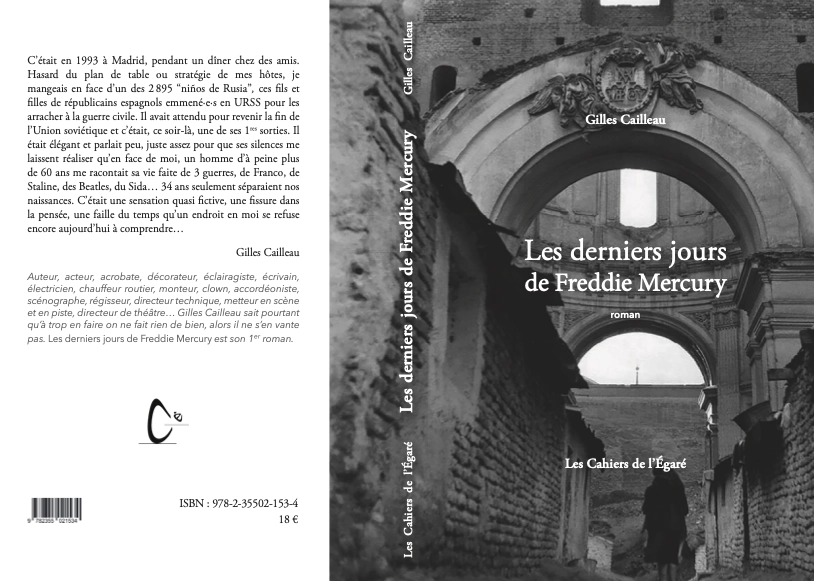
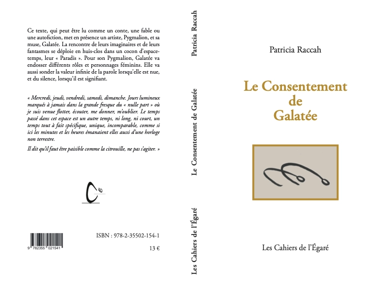
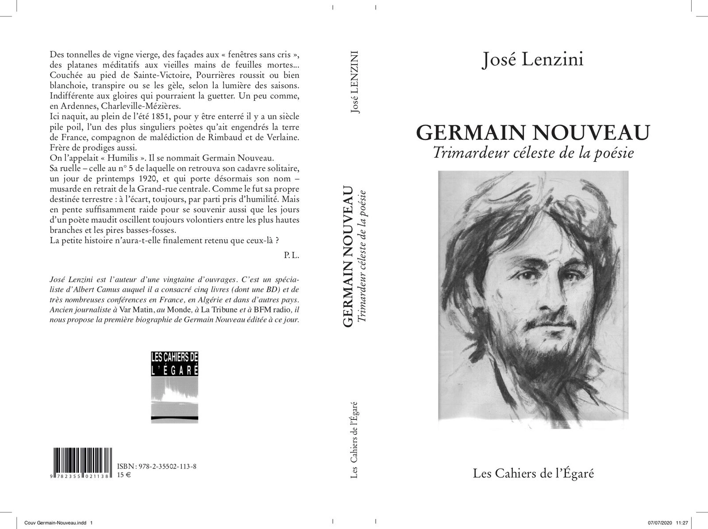

Et ton livre d'éternité ? - Jean-Claude Grosse + Vita Nova
Voilà un livre d’éternité de 666 pages, placé sous le signe du diable, le tentateur qui propose à chacun de démesurer son nombril.

16 X 24 - 666 pages - PVP 28 €Licence Creative CommonsL’auteur de ce livre d’éternité, Celui qu’on appelait communément J.C., hyérosolymitain d’Avers sur les eaux, d’Avers sous les eaux depuis le Déluge et de Corps Ça Vit, appellation non brevetée, non protégée l’identifiant par nom-prénom, date et lieu de naissance, taille 1,69, sexe de taille XXL, fut le jouet pendant 80 ans de la commerie.
Je-Moi-Lui faisait comme tout le monde. Porteur de masques, joueur de rôles, il fut un faussaire, un imposteur.
À 80 ans passés, Lui-Je-Moi fut pris de fou-rire, il s’allégea puisqu’il n’était rien ni personne.
Moi-Lui-Je, Celui qu’on appelait communément J.C., donna naissance le 25 décembre 2020 à 00H00 à Vita Nova, un esprit totalement woke, inidentifiable, sans sexe, sans âge, sans genre, sans espèce, sans Histoire, sans mémoires, localisé comme corps, non localisable comme esprit, intemporel et acausal, un trou noir obscur à soi, absorbant toute tentative de mise en lumière.
« Je crois bien que notre vie intérieure tout entière est quelque chose comme une phrase unique entamée dès le premier éveil de la conscience, phrase semée de virgules, mais nulle part coupée par des points. »
Henri Bergson, L'énergie spirituelle, (in Oeuvres, édition du centenaire, Paris, P.U.F., 1963, p.858)
« Les vies que nous n’avons pas vécues, les êtres que nous n’avons pas aimés, les livres que nous n’avons pas lus ou écrits, ne sont pas absents de nos existences. Ils ne cessent au contraire de les hanter, avec d’autant plus de force que, loin d’être de simples songes comme le croient les esprits rationalistes, ils disposent d’une forme de réalité, dont la douceur ou la violence nous submerge dans les heures douloureuses où nous traverse la pensée de tout ce que nous aurions pu devenir. »
Pierre Bayard, Il existe d’autres mondes, (Les Éditions de Minuit, 2014)
ISBN 978-2-35502-130-5
Les derniers jours de Freddie Mercury
- Gilles Cailleau
C’était en 1993 à Madrid, pendant un dîner chez des amis. Hasard du plan de table ou stratégie de mes hôtes, je mangeais en face d’un des 2 895 “niños de Rusia”, ces fils et filles de républicains espagnols emmené·e·s en URSS pour les arracher à la guerre civile.

244 pages, 13,5 X 20,5 PVP 18 €Il avait attendu pour revenir la fin de l’Union soviétique et c’était, ce soir-là, une de ses 1res sorties. Il était élégant et parlait peu, juste assez pour que ses silences me laissent réaliser qu’en face de moi, un homme d’à peine plus de 60 ans me racontait sa vie faite de 3 guerres, de Franco, de Staline, des Beatles, du Sida…
34 ans seulement séparaient nos naissances. C’était une sensation quasi fictive, une fissure dans la pensée, une faille du temps qu’un endroit en moi se refuse encore aujourd’hui à comprendre…
ISBN 978-2-35502-153-4
Le consentement de Galatée - Patricia Raccah
Le consentement de Galatée peut être lu comme un conte, une fable ou une autofiction. Ce récit combinant narration, journal, lettres et encres de chine met en présence un artiste, Pygmalion, et sa muse, Galatée.

132 pages, 13,5 X 20,5, PVP 13 €La rencontre de leurs imaginaires et de leurs fantasmes se déploie en huis-clos dans un cocon d’espace-temps, leur «Paradis».
Pour son Pygmalion, Galatée va endosser différents rôles et personnages féminins. Elle va aussi sonder la valeur infinie de la parole lorsqu'elle est nue, et du silence, lorsqu'il est signifiant.
« Mercredi, jeudi, vendredi, samedi, dimanche. Jours lumineux marqués à jamais dans la grande fresque du « nulle part » où je suis venue flotter, écouter, me donner, m’oublier. Le temps passé dans cet espace est un autre temps, ni long, ni court, un temps tout à fait spécifique, unique, incomparable, comme si ici les minutes et les heures émanaient elles aussi d’une horloge non terrestre.Il dit qu’il faut être paisible comme la citrouille, ne pas s’agiter. »
ISBN : 978-2-35 502-154-1
Germain Nouveau, trimardeur céleste de la poésie - José Lenzini
Des tonnelles de vigne vierge, des façades aux « fenêtres sans cris », des platanes méditatifs aux vieilles mains de feuilles mortes...
Couchée au pied de Sainte-Victoire, Pourrières roussit ou bien blanchoie, transpire ou se les gèle, selon la lumière des saisons.
Indifférente aux gloires qui pourraient la guetter. Un peu comme, en Ardennes, Charleville-Mézières.

248 pages, 14 X 22, PVP 15€Ici naquit, au plein de l'été 1851, pour y être enterré il y a un siècle pile poil, l'un des plus singuliers poètes qu'ait engendrés la terre de France, compagnon de malédiction de Rimbaud et de Verlaine.
Frère de prodiges aussi.
On l'appelait « Humilis ». Il se nommait Germain Nouveau.
Sa ruelle - celle au n° 5 de laquelle on retrouva son cadavre solitaire, un jour de printemps 1920, et qui porte désormais son nom - musarde en retrait de la Grand-rue centrale. Comme le fut sa propre destinée terrestre : à l'écart, toujours, par parti pris d'humilité. Mais en pente suffisamment raide pour se souvenir aussi que les jours d'un poète maudit oscillent toujours volontiers entre les plus hautes branches et les pires basses-fosses.
La petite histoire n'aura-t-elle finalement retenu que ceux-là ?
ISBN: 978-2-35502-113-8